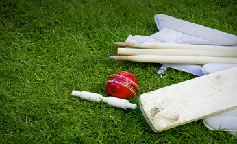

Hey Kids, stuck indoors on a sunny day with nothing to do? Why not gather up a few friends and play some fun activiites?! Not only are they a blast for everyone involved, they will help you become bigger and stronger! Most importantly however, these games are great examples of the kind of physical exercise you should try at every opertunity!
Below are some fun games shared with us from our good friends at kidspot.com.au!

Backyard cricket is a traditional game for many families. Get the kids and the whole family involved in a game of backyard cricket and test the kids out. Learn to throw, catch and most of all, be a good sport!
Number of Players
2 and up!
What you need:
- One or more tennis balls.
- A Cricket bat
- 2 sets of stumps. (Rubbish bins or chairs work just as well!)
Activity:
Set the stumps up about 10 metres apart for older kids, or about 6 metres for littlies.
The batters stump is best put against a fence if in a backyard.
If just two players, choose your batter and a bowler.
If more, your bowlers, two batters, and scatter the rest of the kids around to field the ball.
To avoid squabbles, make sure everyone gets a chance to both bat and bowl.
Backyard cricket is played just like normal cricket - but there are a few different rules to make it fair.
Some rules for extra fun!
- Can't go out first ball - whoever's batting, they can't go out on the first ball (making it fairer for little ones).
- 'Tippity-run' - if the ball is hit even a little, the batters have to run.
- One hand - one bounce' - a fielder can catch the batter out with one hand, even after the tennis ball has bounced off a fence or wall.
- Any wicket out - the batter can be knocked out if either stump is hit.
- 'Six and out' - if the ball is hit over the fence/ house they are awarded six runs - but are also out (this is where the extra balls come in handy).
- No LBW's (Leg Before Wicket) - it's too tricky and starts arguments - unless Dad wants to umpire.
- Automatic runs - pick certain spots in the backyard (like the side of a shed or a fence) and award a certain number of automatic runs to anyone who can hit them.
- Last one out - the very last batter can keep on going by themselves until caught out.

Looking for a great outdoor activity for the kids? Get them into a Cat and mouse game! It's a fast, fun and exciting game to keep the kids laughing and running at your next birthday party or family gathering.
Number of players
6 or more
Activity:
Ask for two volunteers to play the cat and the mouse.
The other players should form a circle and hold hands.
The player who is the mouse should stand inside the circle and the cat should stand outside the circle.
The aim of the game is for the mouse to get outside the circle and avoid being caught by the cat.
The mouse must stay moving while inside the circle but cannot stay inside the circle for more than 10 seconds.
The cat cannot come into the circle but they can reach into the circle to grab the mouse.
The circle players have to try and keep the cat away from the mouse by holding up their hands to let the mouse in and out of the circle.
They can also block the cat's attempts to grab the mouse by standing in their way.
If the mouse is caught, the mouse becomes the new cat.
The old cat takes the place of a player holding hands and another player becomes the mouse.
Get the kids active but without creating chaos during your next party or gathering with a game of balloon volleyball. This twist on an all-time favourite beach volleyball game is fun and easy to play inside or out.
Number of Players:
2 or more
Activity
Set up the "volleyball court" by running a piece of string across the playing space, about 40cm off the ground.
Divide the players into two teams.
The two teams must lie on their backs with their feet in the air on each side of the string.
Decide who goes first. The first player must kick the balloon over the string.
The teams must kick the balloon back and forth over the string using only their feet and hands while lying on their backs.
If the balloon touches the floor, the team who missed it allows the other team to gain one point.
The first team to reach 15 points wins.